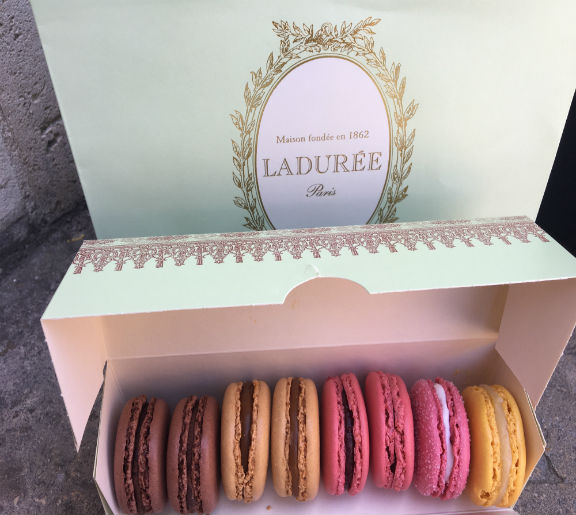
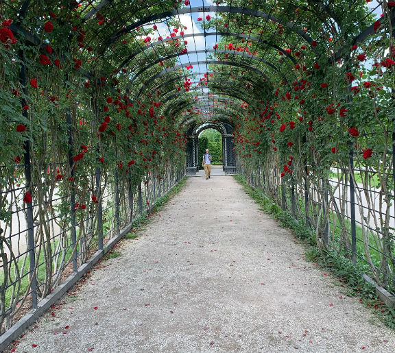
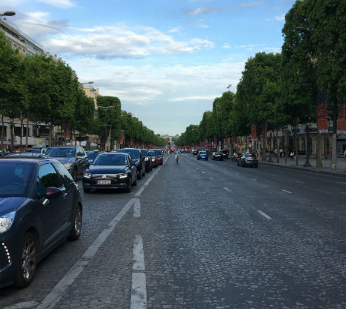
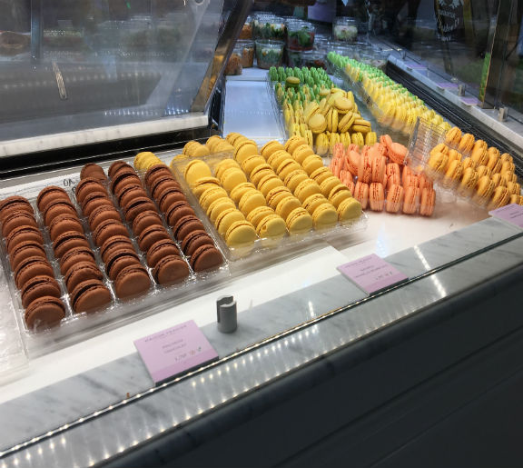
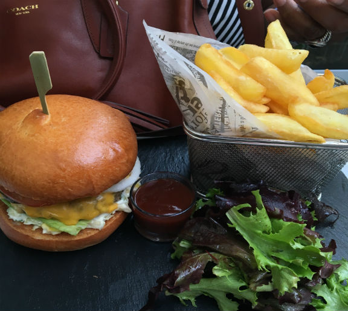
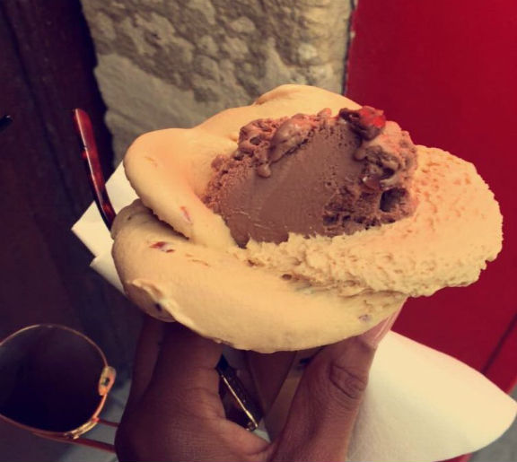

Biography
Hello again! To reintroduce myself, my name is Amber Amos. I am a juinor at Virginia Tech studying Computer Science and Cybersecuirty. When I am not in classes or in the CS lounge, I am participating in orgaizations around campus or spending time with friends. Just a few fun facts about myself: I have traveled to six countries outside of the US, I love food, and family is everything to me. Scroll through my photo gallery to see some of the great places that I have been to, my family and friends, and my favorite dishes and deserts.
Travel
 


Friends and Family
Food
 
